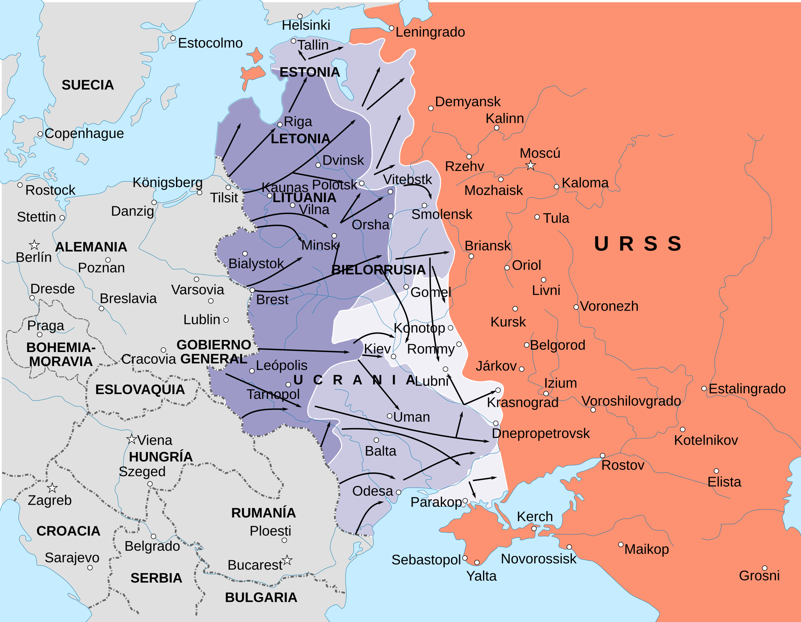

Operación Barbarroja
La invasión alemana de la Unión Soviética, la mayor operación militar terrestre de la historia y el inicio de la guerra más sangrienta del conflicto.
Datos
| Fechas | 22 de junio – 5 de diciembre de 1941 |
|---|---|
| Lugar | Frente Oriental: desde el Báltico hasta el mar Negro |
| Resultado | Fracaso estratégico alemán: el avance se detiene ante Moscú |
| Bando invasor | Alemania, con Rumanía, Finlandia, Hungría e Italia |
| Defensor | Unión Soviética |
| Comandantes | Walther von Brauchitsch, Fedor von Bock, Wilhelm von Leeb, Gerd von Rundstedt (Alemania); Gueorgui Zhúkov, Semión Timoshenko (URSS) |
| Fuerzas | Más de 3 millones de soldados del Eje, la mayor fuerza de invasión de la historia |
Bando invasor
Defensor
Ejército Rojo
Introducción
El 22 de junio de 1941, rompiendo el pacto de no agresión de 1939, Alemania lanzó la Operación Barbarroja: una invasión sorpresa de la Unión Soviética a lo largo de un frente de más de 2.900 km. Fue la mayor operación militar jamás vista, y convirtió el Frente Oriental en el escenario decisivo de la guerra en Europa.
El plan alemán contemplaba tres grandes ejes: el Grupo de Ejércitos Norte hacia Leningrado, el Centro hacia Moscú y el Sur hacia Ucrania y el Cáucaso. Alemania esperaba una victoria en pocos meses; en su lugar, quedó atrapada en una guerra de desgaste que acabaría destruyéndola.
Razones
- Espacio vital (Lebensraum): la conquista del este para colonización alemana era un objetivo central de la ideología nazi.
- Recursos: el grano de Ucrania y el petróleo del Cáucaso eran claves para sostener la guerra.
- Anticomunismo y racismo: el régimen nazi planteó una guerra de aniquilación contra el "bolchevismo" y los pueblos eslavos.
- Golpear antes de que la URSS se fortaleciera: Hitler creía que el Ejército Rojo, debilitado por las purgas y la Guerra de Invierno, se hundiría con rapidez.
Cuerpo (desarrollo)
El ataque logró una sorpresa casi total. En las primeras semanas, las divisiones Panzer envolvieron a ejércitos soviéticos enteros en gigantescas bolsas de cerco (Minsk, Smolensk y, sobre todo, Kiev, donde cayeron prisioneros más de 600.000 soldados soviéticos, el mayor cerco de la historia).
Pero las distancias, el barro del otoño (rasputitsa), las bajas y la inagotable capacidad soviética de reponer tropas fueron desgastando a la Wehrmacht. El avance sobre Moscú (Operación Tifón) se estancó a las puertas de la capital con la llegada del invierno. El 5 de diciembre, el Ejército Rojo lanzó una contraofensiva que frenó definitivamente a Barbarroja.

Mapa estratégico del Frente Oriental (junio–septiembre de 1941) en español, Wikimedia Commons.
Conclusión
Barbarroja no logró su objetivo de derrotar a la URSS en una campaña relámpago. Alemania conquistó vastos territorios y causó pérdidas colosales, pero no destruyó al Estado ni al Ejército soviéticos.
- Fue el principio del fin: Alemania quedó atrapada en la guerra en dos frentes que había querido evitar.
- El Frente Oriental se convirtió en el más mortífero de toda la guerra, con decenas de millones de muertos.
- Tras el fracaso ante Moscú vendrían Stalingrado y Kursk, que invertirían definitivamente la iniciativa.
Curiosidades
- El nombre: "Barbarroja" (Barbarossa) hacía referencia al emperador medieval Federico I, símbolo del expansionismo germano hacia el este.
- El general Invierno: las tropas alemanas, sin equipo adecuado para el frío, sufrieron decenas de miles de congelaciones al llegar el invierno ruso.
- La reubicación de fábricas: la URSS trasladó su industria hacia los Urales, sosteniendo la producción de guerra pese a la invasión (ver Economía).
Teorías
Debates e interpretaciones historiográficas, presentados como tales:
- El desvío hacia Kiev: se debate intensamente si Hitler acertó al desviar blindados del Centro hacia Ucrania en agosto (logrando el cerco de Kiev pero retrasando el ataque a Moscú) o si fue un error decisivo.
- ¿Era Barbarroja ganable? Historiadores discuten si Alemania pudo haber vencido con otra estrategia, o si la desproporción de recursos y espacio la condenaba desde el principio.
- El factor invierno: se debate cuánto pesó realmente el clima frente a los errores logísticos y la subestimación del enemigo.